这篇RabbitMQ文章是基于 狂神说 和 Linux安装RabbitMQ详细教程 两位大佬所写的RabbitMQ文章的笔记与总结，仅供个人学习和复习用。
Linux环境安装
前期环境准备
由于RabbitMQ是使用Erlang开发的，所有不同版本的RabbitMQ需要安装对应的Erlang环境。可参考https://www.rabbitmq.com/which-erlang.html。
官方安装包下载地址
【erlang下载地址】：https://github.com/rabbitmq/erlang-rpm/releases
【rabbitmq下载地址】：https://github.com/rabbitmq/rabbitmq-server/releases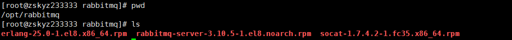
1.安装C++依赖环境
# yum -y install gcc
# yum -y install gcc-c++2.创建rabbitmq文件夹，并将下载的包放上去。
# cd /opt
# mkdir rabbitmq
# cd rabbitmq3.安装Erlang
rpm -ivh erlang-25.0-1.el8.x86_64.rpm
# 安装成功后查看Erlang版本，按两次Ctrl+c推出命令行模式
erl -v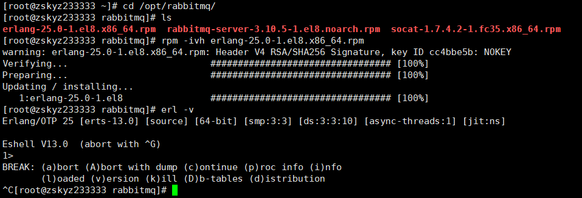
4.安装socat
yum install -y socat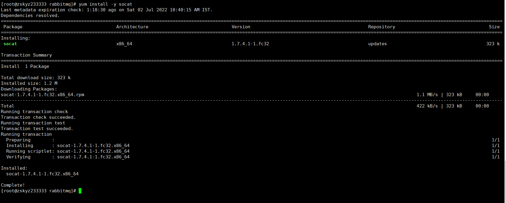
5.安装rabbitmq
rpm -ivh rabbitmq-server-3.10.5-1.el8.noarch.rpm
rpm -qa|grep rabbitmq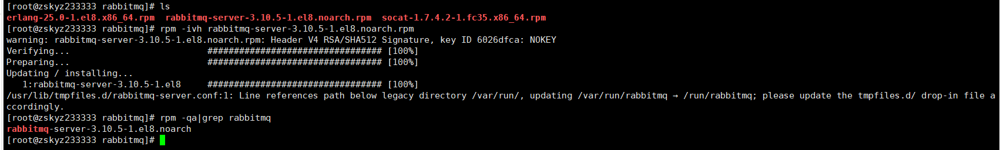
查询是否成功
#启动服务
systemctl start rabbitmq-server
#查看状态
systemctl status rabbitmq-server.service 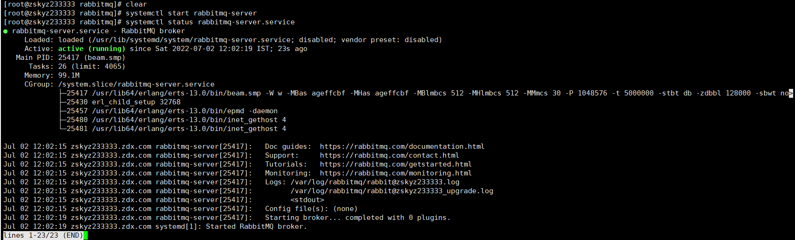
rabbitmq图像管理界面
rabbitmq-plugins enable rabbitmq_management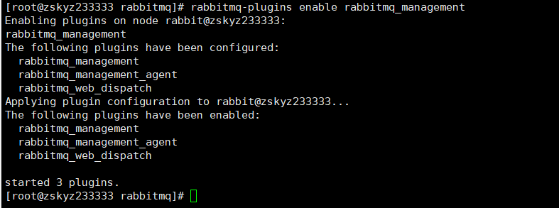
然后在浏览器输入IP地址:15672打开管理页。
开启后有个默认登录账号密码为guest。但是只运行本机登录。
新增用户
rabbitmqctl add_user admin admin设置用户分配操作权限
给admin用户设置权限
rabbitmqctl set_user_tags admin administrator用户级别：
- administrator 可以登录控制台、查看所有信息、可以队rabbitmq进行管理
- monitoring 监控者可以登录控制台、查看所有信息
- policymaker 策略制定者可以登录控制台、指定策略
- managment 普通管理员可以登录控制台
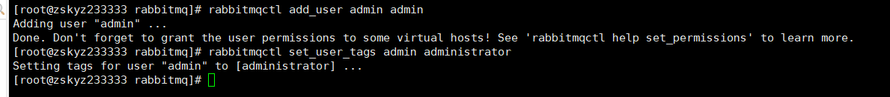
docker安装rabbitmq
1.1 docker安装
1. yum 包更新到最新
> yum update
2.安装需要的软件包 yum-util 提供 yum-config-manager功能,另外两个是devicemapper驱动依赖
> yum install -y yum-utils device-mapper-persistent-data lvm2
3.设置yum源为阿里云
> yum-config-manager --add-repo http://mirrors.aliyun.com/docker-ce/linux/centos/docker-ce.repo
4.安装docker
> yum install docker-ce -y
5.安装加速镜像
sudo mkdir -p /etc/docker
sudo tee /etc/docker/daemon.json <<-'EOF'
{
"registry-mirrors": ["https://i13zq7cf.mirror.aliyuncs.com"]
}
EOF
sudo systemctl daemon-reload
sudo systemctl restart docker
1.2 docker相关命令
# 启动docker
systemctl start docker
# 停止docker
systemctl stop docker
# 重启docker
systemctl restart docker
# 查看docker状态
systemctl status docker
#开机启动
systemctl enable docker
systemctl unenable docker
#查看docker概要信息
docker info1.3 docker安装rabbitmq
# 获取rabbit镜像
docker pull rabbitmq:management
# 创建并运行容器
docker run -di --name=myrabbit -p 15672:15672 rabbitmq:management
# --hostname: 指定容器主机名称
# --name: 指定容器名称
# --p：将mq端口号映射到本地
# 运行时设置用户和密码
docker run -di --name myrabbit -e RABBITMQ_DEFAULT_USER=admin -e RABBITMQ_DEFAULT_PASS=admin -p 15672:15672 -p 5672:5672 -p25672:25672 -p 61613:61613 -p 1883:1883 rabbitmq:management
# 查看日志1
docker logs -f myrabbitRabbitMQ使用
RabbitMQ通讯方式
官网目前通讯方式有七种：https://rabbitmq.com/getstarted.html
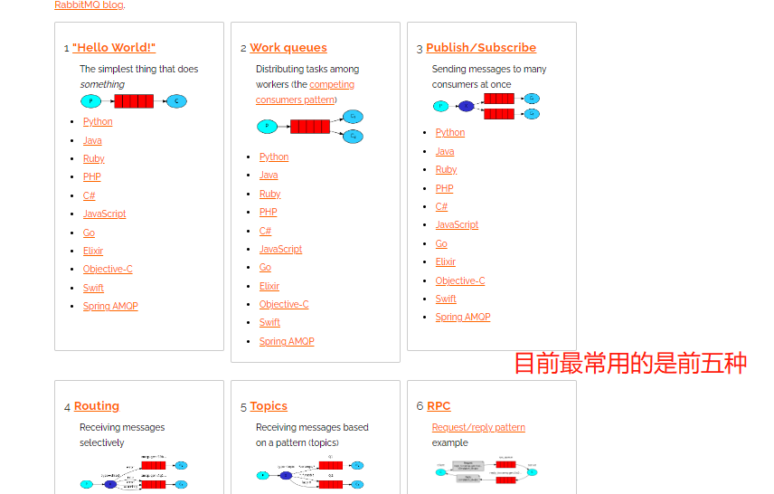
创建Maven工程
导入RabbitMQ的依赖
<!--RabbitMQ的依赖-->
<dependency>
<groupId>com.rabbitmq</groupId>
<artifactId>amqp-client</artifactId>
<version>5.10.0</version>
</dependency>java示例
生产者
package com.rabbitmq.simple;
import com.rabbitmq.client.Channel;
import com.rabbitmq.client.Connection;
import com.rabbitmq.client.ConnectionFactory;
public class Producer {
public static void main(String[] args) {
// 1: 创建连接工程
ConnectionFactory connectionFactory = new ConnectionFactory();
connectionFactory.setHost("100.42.73.161");
connectionFactory.setPort(5672);
connectionFactory.setUsername("admin");
connectionFactory.setPassword("admin");
connectionFactory.setVirtualHost("/");
Connection connection =null;
Channel channel = null;
// 2: 创建连接Connection
try {
connection = connectionFactory.newConnection("生产者");
// 3: 通过连接获取通道Channel
channel = connection.createChannel();
// 4: 通过通道创建2交换机、声明队列、绑定关系、路由Key、发送消息和接收消息
String queueName = "queue1";
/*
参数1 队列的名字
参数2 是否要持久化
参数3 是否独占队列
参数4 是否自动删除，随着最后一个消费者消费完毕消息后是否把队列自动删除
参数5 携带附加参数
*/
channel.queueDeclare(queueName, false, false, false, null);
// 5: 准备消息内容
String message = "Hello World!";
// 6: 发送消息给队列Queue
/*
参数1 交换机
参数2 队列、路由key
参数3 消息的状态控制
参数4 消息主体
*/
channel.basicPublish("", queueName, null, message.getBytes());
}catch (Exception e){
e.printStackTrace();
}finally {
// 7: 关闭通道
if(channel.isOpen()){
try {
channel.close();
}catch (Exception ex){
ex.printStackTrace();
}
}
// 8: 关闭连接
if( connection.isOpen()){
try {
connection.close();
}catch (Exception ex){
ex.printStackTrace();
}
}
}
}
}
消费者
package com.rabbitmq.simple;
import com.rabbitmq.client.*;
import java.io.IOException;
public class Consumer {
public static void main(String[] args){
// 1: 创建连接工程
ConnectionFactory connectionFactory = new ConnectionFactory();
connectionFactory.setHost("100.42.73.161");
connectionFactory.setPort(5672);
connectionFactory.setUsername("admin");
connectionFactory.setPassword("admin");
connectionFactory.setVirtualHost("/");
Connection connection =null;
Channel channel = null;
try {
// 2: 创建连接Connection
connection = connectionFactory.newConnection("生产者");
// 3: 通过连接获取通道Channel
channel = connection.createChannel();
// 4: 通过通道创建2交换机、声明队列、绑定关系、路由Key、发送消息和接收消息
channel.basicConsume("queue1", true, new DeliverCallback() {
@Override
public void handle(String s, Delivery delivery) throws IOException {
System.out.println("收到消息：" + new String(delivery.getBody(), "UTF-8"));
}
}, new CancelCallback() {
@Override
public void handle(String s) throws IOException {
System.out.println("接收消息失败");
}
});
}catch (Exception e){
e.printStackTrace();
}finally {
// 7: 关闭通道
if(channel != null && channel.isOpen()){
try {
channel.close();
}catch (Exception ex){
ex.printStackTrace();
}
}
// 8: 关闭连接
if(connection != null && connection.isOpen()){
try {
connection.close();
}catch (Exception ex){
ex.printStackTrace();
}
}
}
}
}
绑定交换机
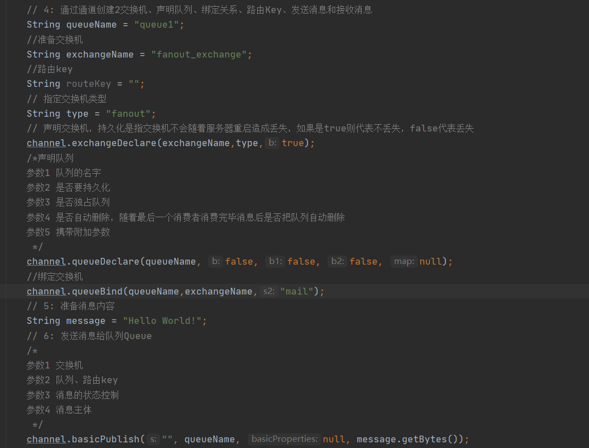
SpringBoot整合
添加Maven依赖
<?xml version="1.0" encoding="UTF-8"?>
<project xmlns="http://maven.apache.org/POM/4.0.0" xmlns:xsi="http://www.w3.org/2001/XMLSchema-instance"
xsi:schemaLocation="http://maven.apache.org/POM/4.0.0 https://maven.apache.org/xsd/maven-4.0.0.xsd">
<modelVersion>4.0.0</modelVersion>
<parent>
<groupId>org.springframework.boot</groupId>
<artifactId>spring-boot-starter-parent</artifactId>
<version>2.7.1</version>
<relativePath/> <!-- lookup parent from repository -->
</parent>
<groupId>com.zsky</groupId>
<artifactId>rabbitmq-java</artifactId>
<version>0.0.1-SNAPSHOT</version>
<name>rabbitmq-java</name>
<description>Demo project for Spring Boot</description>
<properties>
<java.version>1.8</java.version>
</properties>
<dependencies>
<dependency>
<groupId>org.springframework.boot</groupId>
<artifactId>spring-boot-starter</artifactId>
</dependency>
<dependency>
<groupId>org.projectlombok</groupId>
<artifactId>lombok</artifactId>
<optional>true</optional>
</dependency>
<dependency>
<groupId>org.springframework.boot</groupId>
<artifactId>spring-boot-starter-test</artifactId>
<scope>test</scope>
</dependency>
<dependency>
<groupId>org.springframework.boot</groupId>
<artifactId>spring-boot-starter-web</artifactId>
</dependency>
<!--rabbitmq starter依赖-->
<dependency>
<groupId>org.springframework.boot</groupId>
<artifactId>spring-boot-starter-amqp</artifactId>
</dependency>
<dependency>
<groupId>org.springframework.amqp</groupId>
<artifactId>spring-rabbit-test</artifactId>
<scope>test</scope>
</dependency>
</dependencies>
<build>
<plugins>
<plugin>
<groupId>org.springframework.boot</groupId>
<artifactId>spring-boot-maven-plugin</artifactId>
<configuration>
<excludes>
<exclude>
<groupId>org.projectlombok</groupId>
<artifactId>lombok</artifactId>
</exclude>
</excludes>
</configuration>
</plugin>
</plugins>
</build>
</project>
配置文件 application.yml
# 服务端口
server:
port: 8080
#配置rabbitmq服务
spring:
rabbitmq:
username: admin
password: admin
virtual-host: /
host: 106.22.76.151
port: 5672
配置类 RabbitmqConfig
package com.zsky.rabbitmqjava.config;
import com.rabbitmq.client.ConnectionFactory;
import org.springframework.amqp.rabbit.connection.CachingConnectionFactory;
import org.springframework.amqp.rabbit.core.RabbitTemplate;
import org.springframework.beans.factory.annotation.Value;
import org.springframework.beans.factory.config.ConfigurableBeanFactory;
import org.springframework.boot.SpringBootConfiguration;
import org.springframework.context.annotation.Bean;
import org.springframework.context.annotation.Scope;
@SpringBootConfiguration
public class RabbitmqConfig {
@Value("${spring.rabbitmq.host}")
private String host;
@Value("${spring.rabbitmq.port}")
private int port;
@Value("${spring.rabbitmq.username}")
private String username;
@Value("${spring.rabbitmq.password}")
private String password;
@Value("${spring.rabbitmq.virtual-host}")
private String virtualhost;
@Bean
public CachingConnectionFactory connectionFactory() {
CachingConnectionFactory connectionFactory = new CachingConnectionFactory(host,port);
connectionFactory.setUsername(username);
connectionFactory.setPassword(password);
connectionFactory.setVirtualHost(virtualhost);
return connectionFactory;
}
@Bean
@Scope(ConfigurableBeanFactory.SCOPE_PROTOTYPE) //必须是prototype类型 多例模式每次注入都创建一个新的
public RabbitTemplate rabbitTemplate() {
RabbitTemplate template = new RabbitTemplate(connectionFactory());
return template;
}
}fanout 发布订阅模式
配置文件添加绑定关系 RabbitMqConfiguration
// 声明注册fanout模式的交换机
@Bean
public FanoutExchange fanoutExchange() {
return new FanoutExchange("fanout_zsky",true,false);
}
//声明队列
@Bean
public Queue smsQueue() {
return new Queue("sms.fanout.queue",true);
}
@Bean
public Queue wechatQueue() {
return new Queue("wechat.fanout.queue",true);
}
@Bean
public Queue emailQueue() {
return new Queue("email.fanout.queue",true);
}
// 完成绑定关系
@Bean
public Binding smsBinding() {
return BindingBuilder.bind(smsQueue()).to(fanoutExchange());
}
@Bean
public Binding wechatBinding() {
return BindingBuilder.bind(wechatQueue()).to(fanoutExchange());
}
@Bean
public Binding emailBinding() {
return BindingBuilder.bind(emailQueue()).to(fanoutExchange());
}生产者 OrderService
package com.zsky.rabbitmqjava.service;
import org.springframework.amqp.rabbit.core.RabbitTemplate;
import org.springframework.beans.factory.annotation.Autowired;
import org.springframework.stereotype.Service;
import java.util.UUID;
@Service
public class OrderService {
@Autowired
private RabbitTemplate rabbitTemplate;
//模拟用户下单
public void makeOrder(String userid,String productid,int num){
// 1:根据商品id查询库是否充足
// 2:保存订单
String orderId = UUID.randomUUID().toString();
System.out.println("订单生成+ " +orderId);
// 3：通过MQ来完成消息分发
String exchangeName = "fanout_zsky";
String routingKey = "";
rabbitTemplate.convertAndSend(exchangeName,routingKey,orderId);
}
}消费者 FanoutSMSConsumer
package com.zsky.rabbitmqjava.service;
import org.springframework.amqp.rabbit.annotation.RabbitHandler;
import org.springframework.amqp.rabbit.annotation.RabbitListener;
import org.springframework.stereotype.Service;
@RabbitListener(queues = {"sms.fanout.queue"})
@Service
public class FanoutSMSConsumer {
@RabbitHandler
public void reviceMessage(String message){
System.out.println("sms接受到订单消息==== "+message);
}
}direct模式
其实跟fanout模式相似只是多了一个routingKey。
配置类绑定direct交换机
// 声明注册交换机
@Bean
public DirectExchange directExchange() {
return new DirectExchange("direct_zsky",true,false);
}
//声明队列
@Bean
public Queue smsQueue() {
return new Queue("sms.direct.queue",true);
}
@Bean
public Queue wechatQueue() {
return new Queue("wechat.direct.queue",true);
}
@Bean
public Queue emailQueue() {
return new Queue("email.direct.queue",true);
}
// 完成绑定关系
@Bean
public Binding smsBinding() {
return BindingBuilder.bind(smsQueue()).to(directExchange()).with("sms"); //这里多了routingKey
}
@Bean
public Binding wechatBinding() {
return BindingBuilder.bind(wechatQueue()).to(directExchange()).with("wechat");
}
@Bean
public Binding emailBinding() {
return BindingBuilder.bind(emailQueue()).to(directExchange()).with("email");
}生产者
//模拟用户下单
public void makeOrderDirect(String userid,String productid,int num){
// 1:根据商品id查询库是否充足
// 2:保存订单
String orderId = UUID.randomUUID().toString();
System.out.println("订单生成+ " +orderId);
// 3：通过MQ来完成消息分发
String exchangeName = "direct_zsky";
rabbitTemplate.convertAndSend(exchangeName,"sms",orderId);
rabbitTemplate.convertAndSend(exchangeName,"email",orderId);
}消费者
DirectEmailConsumer
package com.zsky.rabbitmqjava.service;
import org.springframework.amqp.rabbit.annotation.RabbitHandler;
import org.springframework.amqp.rabbit.annotation.RabbitListener;
import org.springframework.stereotype.Service;
@RabbitListener(queues = {"email.direct.queue"})
@Service
public class DirectEmailConsumer {
@RabbitHandler
public void reviceMessage(String message){
System.out.println("sms接受到订单消息==== "+message);
}
}DirectSMSConsumer
package com.zsky.rabbitmqjava.service;
import org.springframework.amqp.rabbit.annotation.RabbitHandler;
import org.springframework.amqp.rabbit.annotation.RabbitListener;
import org.springframework.stereotype.Service;
@RabbitListener(queues = {"sms.direct.queue"})
@Service
public class DirectSMSConsumer {
@RabbitHandler
public void reviceMessage(String message){
System.out.println("sms接受到订单消息==== "+message);
}
}topic模式
‘#’ 代表0-n
‘*’ 代表有且只有一个
交换机和队列的绑定关系也可以在消费者的注解中实现。
消费者TopicSMSConsumer
package com.zsky.rabbitmqjava.service;
import org.springframework.amqp.core.ExchangeTypes;
import org.springframework.amqp.rabbit.annotation.*;
import org.springframework.stereotype.Service;
@Service
public class TopicSMSConsumer {
@RabbitListener(bindings = @QueueBinding(
value = @Queue(value = "sms.topic.queue",declare = "true",autoDelete = "false"),
exchange = @Exchange(value = "topic_zsky",type = ExchangeTypes.TOPIC),
key = "#.topic.*"
))
@RabbitHandler
public void reviceMessage(String message){
System.out.println("sms接受到订单消息==== "+message);
}
}生产者
//模拟用户下单 topic模式
public void makeOrderTopic(String userid,String productid,int num){
// 1:根据商品id查询库是否充足
// 2:保存订单
String orderId = UUID.randomUUID().toString();
System.out.println("订单生成+ " +orderId);
// 3：通过MQ来完成消息分发
String exchangeName = "topic_zsky";
String routingKey ="com.topic.sms";
rabbitTemplate.convertAndSend(exchangeName,routingKey,orderId);
}过期时间TTL
概述
过期时间TTL表示可以对消息设置预期时间，在这个时间内都可以被消费者接收获取；过了之后消息将自动被删除。RabbitMQ可以对消息和队列设置TTL。目前有两种方法可以设置。
- 第一种方法是通过队列属性设置，队列中所有消息都有相同的过期时间。
- 第二种方法是对消息进行单独设置，每条消息TTL可以不同。
如果上述两种方法同时使用，则消息的过期时间以两者之间TTL较小的那个数值为准。消息在队列的生存时间一旦超过设置的TTL值，就称为dead message被投递到死信队列，消费者将无法再收到该消息。
设置过期时间
配置类
// 声明注册交换机
@Bean
public DirectExchange directExchangeTTL() {
return new DirectExchange("direct_zsky_TTL",true,false);
}
//声明队列
@Bean
public Queue smsQueueTTL() {
//设置队列的过期时间
Map<String,Object> args = new HashMap<>();
args.put("x-message-ttl",5000);//时间必须为int类型
return new Queue("sms.directTTL.queue",true,false,false,args);
}
// 完成绑定关系
@Bean
public Binding ssmTTLBinding() {
return BindingBuilder.bind(smsQueueTTL()).to(directExchangeTTL()).with("smsTTL");
}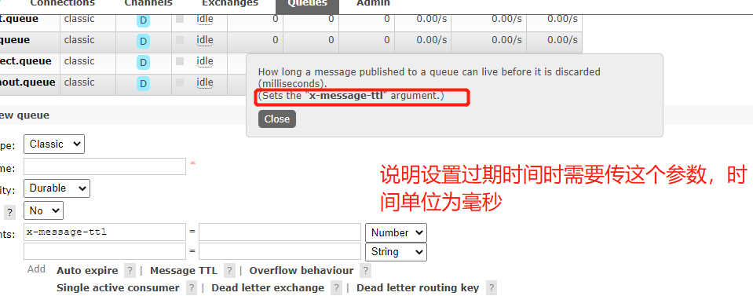
生产者
//模拟用户下单 Direct模式 设置TTL过期时间
public void makeOrderDirectTTL(String userid,String productid,int num){
// 1:根据商品id查询库是否充足
// 2:保存订单
String orderId = UUID.randomUUID().toString();
System.out.println("订单生成+ " +orderId);
// 3：通过MQ来完成消息分发
String exchangeName = "direct_zsky_TTL";
String routingKey ="smsTTL";
rabbitTemplate.convertAndSend(exchangeName,routingKey,orderId);
}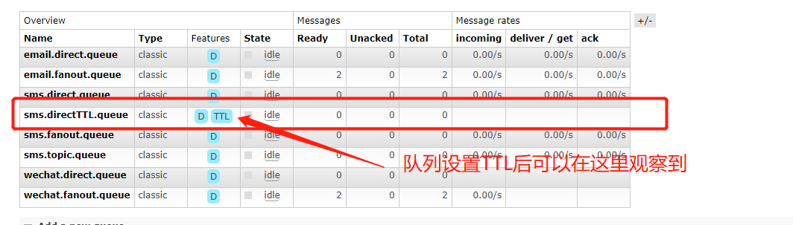
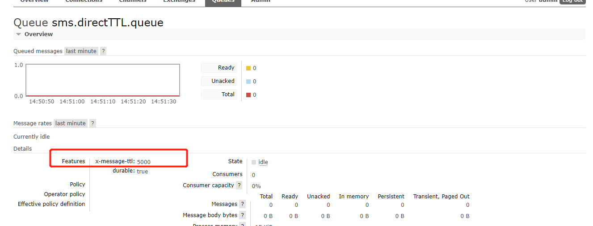
第二种设置方法针对某个信息设置过期时间 （这种消息过期方式当消息过期后无法写入到死信队列里）
生产者
//模拟用户下单
public void makeOrderDirect(String userid,String productid,int num){
// 1:根据商品id查询库是否充足
// 2:保存订单
String orderId = UUID.randomUUID().toString();
System.out.println("订单生成+ " +orderId);
// 3：通过MQ来完成消息分发
String exchangeName = "direct_zsky";
//给消息设置过期时间
MessagePostProcessor messagePostProcessor = new MessagePostProcessor() {
@Override
public Message postProcessMessage(Message message) throws AmqpException {
message.getMessageProperties().setExpiration("5000");//字符串
message.getMessageProperties().setContentEncoding("UTF-8");
return message;
}
};
rabbitTemplate.convertAndSend(exchangeName,"sms",orderId,messagePostProcessor);//该消息五秒内没被消费则会消失
rabbitTemplate.convertAndSend(exchangeName,"email",orderId);
}死信队列
概述
DLX全称为Dead-Letter-Exchange，可以称之为死信交换机，也有人称之为死信邮箱。当消息在一个队列中变成死信(dead message)之后，它能被重新发送到另一个交换机中，这个交换机就算DLX，绑定DLX的队列就称之为死信队列。消息变成死信，可能是由于以下的原因：
- 消息被拒绝
- 消息过期
- 队列达到最大长度
DLX也是一个正常的交换机，和一般的交换机没有区别，它能在任何的队列上被指定，实际上就是设置某一个队列的属性。当这个队列中存在死信时，RabbitMQ就会自动地将这个消息重新发布到设置的DLX上去，进而被路由到另一个队列，即死信队列。
要想使用死信队列，只需要在定义队列的时候设置队列参数 x-dead-letter-exchange 指定交换机即可
设置死信队列
在配置中声明一个交换机和队列并完成之间的绑定关系作为死信队列
//声明一个死信交换机
@Bean
public DirectExchange deadExchange(){
return new DirectExchange("direct_dead",true,false);
}
//声明一个自定义的死信队列
@Bean
public Queue deadQueue(){
return new Queue("dead_queue",true);
}
//绑定
@Bean
public Binding deadBinding(){
return BindingBuilder.bind(deadQueue()).to(deadExchange()).with("dead");
}在过期时间队列中配置死信交换机
//声明队列
@Bean
public Queue smsQueueTTL() {
//设置队列的过期时间
Map<String,Object> args = new HashMap<>();
args.put("x-message-ttl",5000);//时间必须为int类型
args.put("x-dead-letter-exchange","direct_dead");//绑定死信交换机
args.put("x-dead-letter-routing-key","dead");//绑定死信交换机的routingkey，如果死信交换机是fanout模式则不需要配置
return new Queue("sms.directTTL.queue",true,false,false,args);
}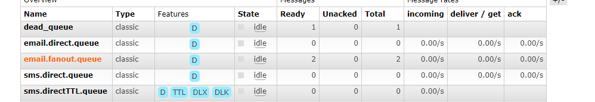